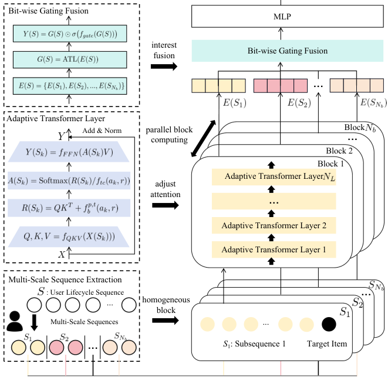

Climber: Toward Efficient Scaling Laws for Large Recommendation Models (面向大推荐模型高效缩放律的 Climber 框架)
- 会议/期刊: CIKM 2025
- 作者与机构: Songpei Xu, Shijia Wang, Da Guo, Xianwen Guo, Qiang Xiao, Bin Huang, Guanlin Wu, Chuanjiang Luo（网易云音乐 NetEase Cloud Music）
- 推荐链路定位: 精排（排序打分）
- 研究方向: 序列与会话推荐 / CTR 预估与特征交叉
- 论文原文: https://arxiv.org/abs/2502.09888v2
- 开源代码: 暂未开源
TL;DR (1分钟核心速览)
本文直击 Transformer 在推荐系统中"缩放不理想 + 线上延迟严苛"的双重困境：工业级实测发现 FLOPs 低于 \(10^{8.2}\)时 Transformer 反而不如 DLRM，且多源异构行为导致注意力分布紊乱。作者提出 Climber，用多尺度子序列抽取把复杂度从\(O(n_s^2 d)\)降到\(O(n^2 d/N_b)\)，用自适应温度系数适配多场景注意力，并配套"单用户多物品"批处理与 KV 缓存。在 Spotify/30Music/Amazon-Book 及网易云工业数据上，Climber-large 相对 DLRM 取得 +2.21% AUC，线上 A/B 整体指标 +12.19%，训练吞吐 5.15×、推理较 DLRM 快 2.92–14.38×。
Background & Motivation (背景与核心矛盾)
- 主流范式: 生成式推荐被视为在推荐系统中兑现 Scaling Law 的最有希望路径，HSTU 用层次化自注意力建模长行为序列，MARM 用记忆缓存把推理复杂度从 \(O(n^2d)\)降到\(O(nd)\)。
- 前人局限: 其一，Transformer 与推荐特有特征存在结构性不兼容——NLP 是连续句法序列，推荐是跨多场景的碎片化行为，注意力难以在稀疏多源模式中区分相关行为；其二，多场景分布差异被当作辅助特征而非显式分布控制器，单一 \(\sqrt{d_k}\) 缩放因子无法适配各子序列的分布差异。
- 核心洞察 (Key Insight): 工业级实测（图 1a）显示 DLRM 与 Transformer 的交叉点在 FLOPs \(=10^{8.2}\)，低于该点 Transformer 全面落后；且图 1b 表明同等 FLOPs 下不同"序列长度 × 层数"组合存在近 1% 的 AUC 性能区间，说明资源分配方式本身即是被忽视的缩放维度。
- 本文切入点: 不追求单纯堆资源，而是从"推荐视角重构 Transformer 结构 + 协同设计工程加速"两条腿走路，把缩放曲线整体左移（更高截距、更大斜率）。
Method (核心方法设计)
1. 整体框架 (Overall Architecture)
Climber 由三个模块串联：多尺度序列抽取（MSE）将用户全生命周期序列 \(S\)按业务策略（点击/点赞/分享等）拆成\(N_b\)条等长子序列\(S_k\)，每条子序列送入独立的 Adaptive Transformer Layer（ATL）堆叠块提取兴趣；ATL 在标准注意力上引入由抽取策略\(a_k\)与推荐场景\(r\)共同决定的自适应温度系数与相对位置/时间偏置；最后 Bit-wise Gating Fusion（BGF）把\(N_b\) 个块输出拼接后经一层 ATL 做块间交互，再用 sigmoid 门控逐位调制，输出统一打分。训练与推理统一采用"单用户多物品"样本组织，配合编码器级 KV 缓存复用用户侧计算。
flowchart TD
A["用户全生命周期序列 S"] --> B["多尺度序列抽取 MSE<br/>按业务策略拆为 N_b 条子序列"]
B --> C["N_b 个 ATL 块并行<br/>自适应温度 + 相对偏置"]
C --> D["Bit-wise Gating Fusion<br/>块间 ATL + Sigmoid 门控"]
D --> E["MLP 输出打分"]
E --> F["单用户多物品批处理 + KV Cache 推理"]
2. 关键设计拆解 (Key Designs)
-
多尺度序列抽取（MSE）：痛点在于全序列自注意力 \(O(n_s^2 d)\)随生命周期序列爆炸。MSE 按策略\(a_k\)抽取等长子序列\(S_k = \mathrm{MSE}(S, a_k)\)，满足\(\sum_{k=1}^{N_b} n_k = n \ll n_s\)（仅保留正向行为）。串行时复杂度降为\(O(n^2 d / N_b)\)，全并行时降为\(O(\max(n_k)^2 d)\)，只依赖最长子序列长度。直觉上，把"全历史稠密注意力"换成"多兴趣稀疏注意力"，既降复杂度又天然对齐多场景兴趣分块。
-
自适应温度调制（ATL）：痛点在于各子序列分布差异大，固定 \(\sqrt{d_k}\) 无法兼顾。ATL 将注意力改写为 $\(\boldsymbol{A}(S_k) = \mathrm{Softmax}\!\left(\frac{\boldsymbol{Q}\boldsymbol{K}^{\top} + f_{p,t}^{b}(a_k, r)}{f_{tc}(a_k, r)}\right)\)$ 其中温度 \(f_{tc}\)与偏置\(f_{p,t}^{b}\)均由抽取策略\(a_k\)和场景\(r\) 决定。相比 HSTU 的固定温度，这让不同行为/场景的注意力锐度可学习，缓解稀疏多源模式下的注意力紊乱。
-
逐位门控融合（BGF）与训练/推理效率：子序列独立编码后缺乏交互，BGF 先拼接 \(\boldsymbol{E}(S) \in \mathbb{R}^{N_b \times d}\)，经 ATL 做块间相似度交互得\(\boldsymbol{G}(S)\)，再逐位门控\(\boldsymbol{Y}(S) = \boldsymbol{G}(S) \odot \sigma(f_{gate}(\boldsymbol{G}(S)))\)。由于\(N_b \ll d\)，该注意力\(O(N_b^2 d)\) 开销可忽略。总损失为多行为目标的加权 BCE 之和；训练采用"单用户多物品"打包（候选物品与全历史全可见掩码、候选间对角掩码隔离），无需额外负采样；推理侧预计算用户多层 KV 缓存，仅对候选物品特征做注意力交互。
Experimental Setup & Evaluation Protocol (实验设置与评估协议)
- 数据集与预处理: 四个数据集，工业数据经隐私特殊处理（展示量低于真实值）：
| 数据集 | #Users | #Items | #Interactions | 特征/场景说明 |
|---|---|---|---|---|
| Spotify | 0.16M | 3.7M | 1.2M | 音乐场景，公开 |
| 30Music | 0.02M | 4.5M | 16M | 音乐场景，公开 |
| Amazon-Book | 0.54M | 0.37M | 1.09M | 图书，跨域验证 |
| Industrial | >40M | >6M | >1B | 网易云音乐真实场景 |
- 数据划分与防穿越 (Splitting Strategy): 采用按用户历史交互预测候选物品行为的序列预测式划分（历史序列 → 目标物品多行为标签），工业侧按线上日志时间顺序构造，避免未来行为泄漏。
- 排名评测协议 (Ranking Protocol): 以 AUC 与 LogLoss 为主指标，属全量候选打分下的分类式评估（非采样负例排序），与线上排序目标一致。
- 对比基线与超参设置: 基线含 DLRM（线上主模型，序列长 2000）、DIN（1000）、TWIN（GSU 2000 / ESU 1000）、Transformer（2000）、HSTU（2000）；Climber 基础版序列长 200、2 层，Climber-large 扩至 12 层、序列长 800。
Key Experimental Results (实验关键数据)
1. 主实验对比 (Main Results)
| 模型 | Spotify AUC | Amazon-Book AUC | 30Music AUC | Industrial AUC | Industrial LogLoss |
|---|---|---|---|---|---|
| DLRM (Baseline) | 0.7606 | 0.7842 | 0.8927 | 0.8216 | 0.7067 |
| DIN | 0.7557 | 0.7796 | 0.8861 | 0.8158 | 0.7109 |
| TWIN | 0.7589 | 0.7831 | 0.8903 | 0.8203 | 0.7078 |
| Transformer | 0.7621 | 0.7836 | 0.8930 | 0.8214 | 0.7074 |
| HSTU | 0.7626 | 0.7869 | 0.8938 | 0.8217 | 0.7053 |
| Climber | 0.7663 | 0.7887 | 0.8986 | 0.8230 | 0.7029 |
| Climber-large | 0.7702 | 0.7914 | 0.9035 | 0.8398 | 0.6911 |
| Improv.% (vs DLRM) | +1.26% | +0.91% | +1.20% | +2.21% | −2.20% |
2. 消融实验 (Ablation Study)
| 配置 | Industrial AUC | 相对 Transformer |
|---|---|---|
| Transformer | 0.8214 | — |
| Climber (-ATL, -BGF) | 0.8221 | +0.085% |
| Climber (-BGF) | 0.8225 | +0.134% |
| Climber (full) | 0.8230 | +0.195% |
3. 关键实验发现 (Key Findings)
- MSE 是效率与效果的双重基石：仅保留 MSE（去掉 ATL/BGF）即比 Transformer 高 +0.085% AUC，同时把序列从 2000 压到 200 仍不损效果，说明"多兴趣稀疏注意力"替代"全历史稠密注意力"是低风险高收益的结构改造。
- ATL 与 BGF 增益互补且递增：ATL 贡献 +0.049%、BGF 再贡献 +0.061%，BGF 增益最大，印证子序列独立编码后块间兴趣融合不可省略；三者叠加后相对 DLRM 提升 +0.170%。
- 缩放需"序列与深度均衡扩张"：同等 FLOPs 下，\(4.11\times10^8\)时\((400s \times 4l)\)最优（0.8301），\(1.01\times10^9\)时\((400s \times 8l)\)最优（0.8335）；FLOPs 翻 4 倍时\((800s \times 8l)\)达 0.8382，显著优于单因子扩张的\((1600s \times 4l)\)与\((400s \times 16l)\)。线上据此交替扩序列与层数，最终 620× FLOPs 模型带来 +12.19% 指标，为全年最大涨幅。
Highlights & Limitations (亮点、对比与审稿批判)
- 与代表作对比 (vs. Prior Work): 相比 HSTU 的层次化注意力与随机序列采样，Climber 用业务策略驱动的多尺度抽取直接降复杂度常数因子，并把固定温度换成场景自适应温度；相比 MARM 的静态用户模式缓存假设，Climber 的 KV 缓存与"单用户多物品"打包在训练/推理两端统一，且不假设行为静态；相比 DLRM，Climber 在低 FLOPs 区把交叉点左移，实现"更省资源即超越"。
- 可迁移亮点: ①"单用户多物品"打包 + 候选间对角掩码隔离，可直接迁移到任何以用户序列为输入的排序模型以压缩样本量；②同等 FLOPs 下交替扩张序列与深度的资源分配准则，对工业迭代排期有直接指导价值。
- 审稿级局限批判: ①多尺度抽取策略（点击/点赞/分享等）高度依赖业务先验，跨域迁移时策略设计成本与效果不确定性未量化；②线上增益来自架构与工程加速的联合贡献，论文未给出纯架构在同等推理预算下的独立线上归因；③温度系数与偏置函数 \(f_{tc}, f_{p,t}^{b}\) 的具体参数化与超参敏感性缺少消融。
Rating (四维评分)
- 方法创新性 (Novelty): ⭐⭐⭐⭐ （多尺度抽取 + 场景自适应温度的组合针对推荐异构性做了扎实的结构性改造，但单点算子新颖度中等，胜在系统性与工业验证）
- 评估协议与实验扎实度 (Protocol & Experiments): ⭐⭐⭐⭐ （四个数据集 + 完整缩放曲线 + 同等 FLOPs 资源分配表 + 线上 A/B，工业证据链罕见地完整；公开集规模偏小、缺显著性检验）
- 写作与数学规范度 (Clarity & Rigor): ⭐⭐⭐⭐ （公式简洁、复杂度推导清晰，MSE/ATL/BGF 三模块边界明确；温度与偏置函数参数化细节略欠）
- 工业落地与复现价值 (Industrial & Practical Value): ⭐⭐⭐⭐⭐ （千万级用户线上部署、5.15× 训练加速、推理快 2.92–14.38×、100× 模型扩容不增资源，落地价值极高；可惜未开源）